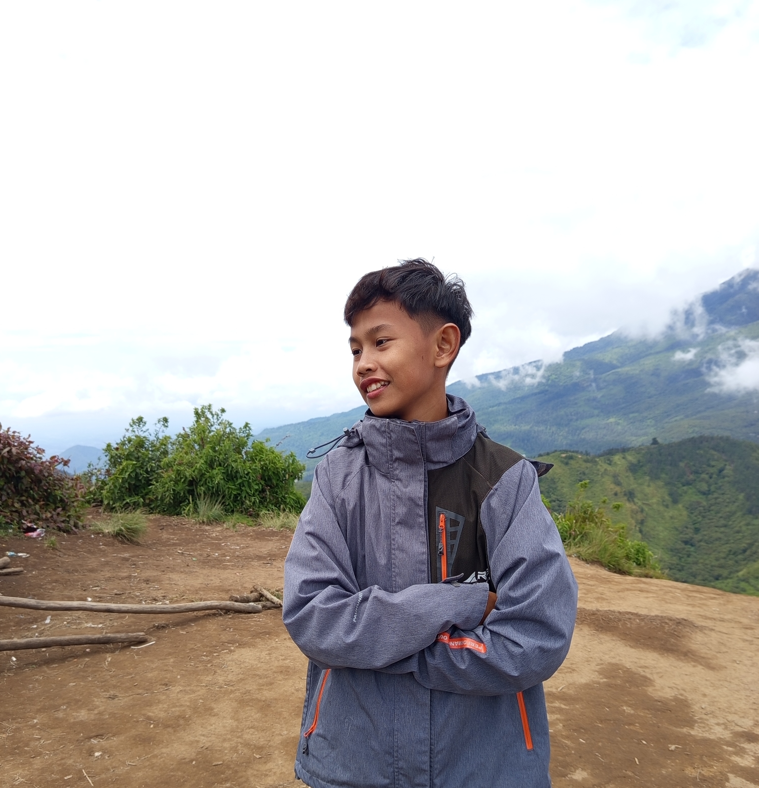

SMK IT Smart Informatika Surakarta
Jurusan TJKT | Aktif di organisasi OSIS dan ekstrakurikuler PMR dan English Ranger
📍 Jl. Pleret Raya Barat No.9, Banyuanyar, Kec. Banjarsari, Kota Surakarta, Jawa Tengah 57137
✨ Pelajar | Good People
Halo! Saya suka belajar hal baru.
Jurusan TJKT | Aktif di organisasi OSIS dan ekstrakurikuler PMR dan English Ranger
📍 Jl. Pleret Raya Barat No.9, Banyuanyar, Kec. Banjarsari, Kota Surakarta, Jawa Tengah 57137Mengikuti Organisasi ROHIS
📍 Jl. Kapten Mulyadi No.17, Manggung, Cangakan, Kec. Karanganyar, Kabupaten Karanganyar, Jawa Tengah 57716Aktif di kelas
📍 RT.2/RW.5, Jetis Kulon, Jetis, Kec. Jaten, Kabupaten Karanganyar, Jawa Tengah 57731Juz 30 dan Juz 29
Perakitan laptop, instalasi windows, maintenance software, office, jaringan dasar, CCTV, printer laser
Bahasa Inggris, IPAS, Matematika, Bahasa Indonesia, Sejarah, PPKn, Bahasa Jawa, Seni Budaya
Sedang berproses menjadi lebih baik